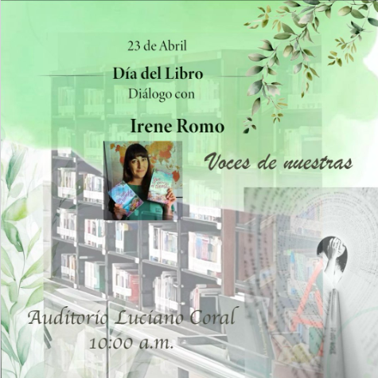
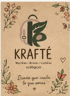
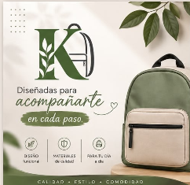
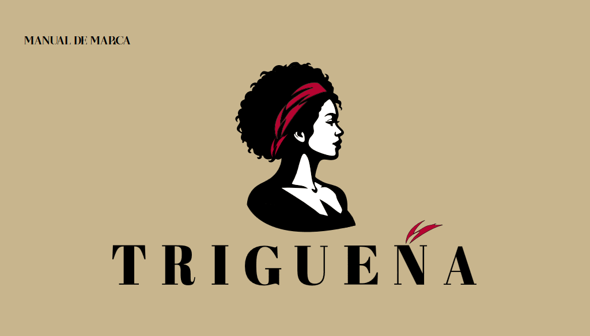
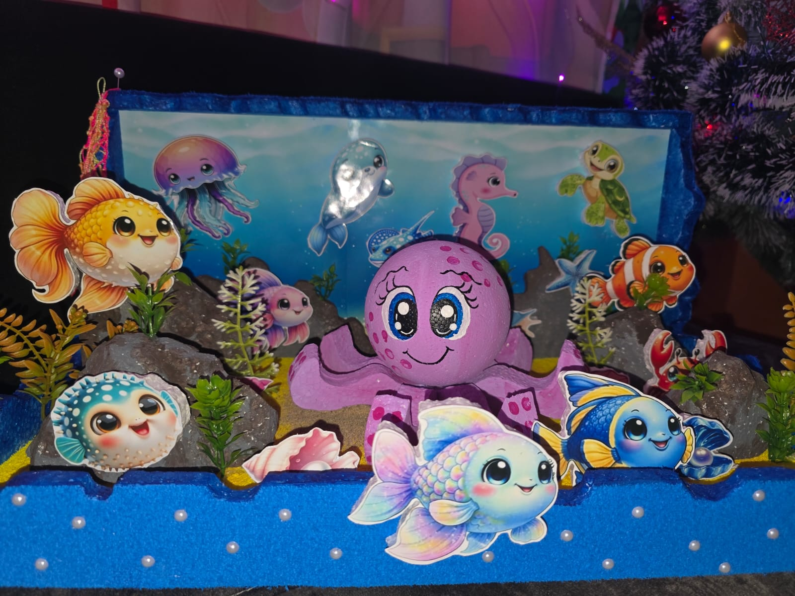

Diseño editorial y publicitario
Día del Libro
Afiche cultural para anunciar un diálogo literario. La composición combina fotografías, elementos vegetales y una paleta verde para transmitir una atmósfera vinculada a la lectura.
Recursos:
Jerarquía tipográfica, composición y comunicación visual.
 Identidad visual
Identidad visual
Pinky Blush
Propuesta gráfica para una marca de belleza. Los tonos rosados, las letras expresivas y los detalles decorativos buscan comunicar una personalidad juvenil y delicada.
Recursos:
Color, tipografía y personalidad de marca.

Branding
Krafté
Identidad para una propuesta de mochilas y bolsos ecológicos. El símbolo combina referencias naturales y la forma de una mochila.
Recursos:
Concepto, logotipo y coherencia visual.

Publicidad digital
Krafté — Publicación 1
Pieza promocional que destaca características de una mochila mediante fotografía, iconos y mensajes breves.
Recursos:
Organización de información y diseño para redes.
 Publicidad digital
Publicidad digital
Krafté — Publicación 2
Segunda pieza de la campaña Krafté, centrada en el producto y su uso cotidiano. Mantiene la paleta natural de la marca.
Recursos:
Continuidad gráfica y composición publicitaria.

Identidad gastronómica
Trigueña
Propuesta de identidad visual para un restaurante que reúne sabores de la Costa y la Sierra. El símbolo y la tipografía construyen una imagen reconocible.
Recursos:
Identidad, aplicaciones y comunicación de marca.
Ver documento PDF
 Fotografía narrativa
Fotografía narrativa
Fragmentos UPEC
Retrato universitario que utiliza un objeto personal para construir una historia visual. El encuadre dirige la atención hacia el gesto y la fotografía enmarcada.
Recursos:
Retrato, composición e intención narrativa.

Animación stop motion
El pulpo lila
Escenario submarino elaborado para una historia protagonizada por un pulpo lila. La maqueta reúne personajes, rocas y vegetación para construir el ambiente de la narración.
Recursos:
Dirección de arte, personajes y construcción de escenarios.